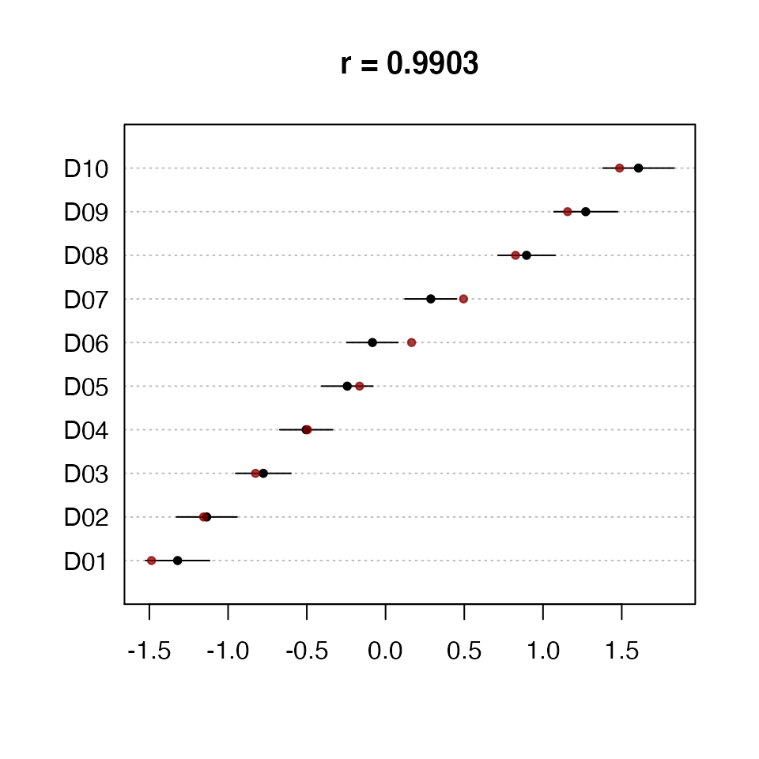

Austin works with any two dimensional matrix-like object for which is.wfm returns TRUE. An object is a wfm when it is indexable in two dimensions, has a complete set of row and column names, and has the dimension names ‘docs’ and ‘words’. Whether these are on rows or columns does not matter. The function wfm will construct a suitable object from any column and row labeled matrix-like object such as a data.frame or matrix.
Austin offers the helper functions as.worddoc and as.docword to extract the raw count data the appropriate way up. That is, as a matrix where words are rows and documents are columns, or where documents are rows and words are columns. The docs and words return vectors of document names and words respectively. getdocs is used for extracting particular sets of documents from a wfm by name or index.
The function trim can be used to remove low frequency words and words that occur in only a few documents. It can also be used to sample randomly from the set of words. This can be helpful to speed up analyses and check robustness to vocabulary choice.
If you already have word frequency data in a file in comma-separated value (.csv) format you can read it in using
data <- wfm('mydata.csv')This function assumes that the word labels are in the first column and document names are in the first row, pretty much as JFreq would offer it to you by default. Assuming that words are rows and documents are columnsuse. If words are columns, add a word.margin=2 argument.
Austin implements the one dimensional text scaling model Wordfish (Slapin and Proksch, 2008). When document positions are random variables the model is known as Rhetorical Ideal Points (Monroe and Maeda, 2004) which is formally equivalent to a Item Response Theory and closely related to the generalized Latent Trait models with a Poisson link, e.g. Moustaki and Knott 2000.
Austin implements a version of Wordfish with faster convergence, analytic or bootstrapped standard errors, and integration into R’s usual model functions, summary, coef, predict, etc.
This model class has two equivalent parameterizations: In the first, word counts are Poisson processes with means conditional on document position theta, word positions beta, document specific offsets alpha and word-specific offsets psi.
In the Austin implementation the parameters are estimated by a Conditional Maximum Likelihood with a regularization constraint on betas that is interpretable as a shared zero mean prior with standard deviation sigma.
Alternatively, conditioning on each document’s length gives a multinomial parameterisation in terms of theta as before, logits of word rates using the first word as the baseline. This is the form of the model reported by Austin and used for prediction.
Austin treats the first parameterization as a computational convenience to make estimation more efficient. The coef function takes a form parameter if you need to see the other parameterisation.
We start by loading the package
library('austin')and generating an (unrealistically small) set of test data according to the assumptions above
dd <- sim.wordfish(docs=10, vocab=12)The resulting object is of class sim.wordfish and contains the generating parameters (in the form of the first model). The two elements of interest are the vector of document positions
dd$theta
## [1] -1.4863011 -1.1560120 -0.8257228 -0.4954337 -0.1651446 0.1651446
## [7] 0.4954337 0.8257228 1.1560120 1.4863011and the generated data Y
as.worddoc(dd$Y)
## docs
## words D01 D02 D03 D04 D05 D06 D07 D08 D09 D10
## W01 41 39 28 27 30 23 16 12 13 10
## W02 41 35 28 24 28 15 15 13 6 9
## W03 40 27 29 31 25 9 12 16 8 3
## W04 9 12 20 14 18 22 27 27 28 42
## W05 11 8 17 26 18 35 30 30 41 43
## W06 5 5 14 15 28 26 26 28 34 28
## W07 89 93 76 81 61 49 50 34 31 25
## W08 104 102 83 81 64 54 43 36 35 13
## W09 83 97 88 78 62 57 42 42 23 22
## W10 24 33 38 45 62 70 89 98 103 107
## W11 21 25 42 36 43 69 74 83 93 94
## W12 32 24 37 42 61 71 76 81 85 104where Y is an object of class wfm.
To scale this data we use the wordfish function
wf <- wordfish(dd$Y)The model is by default globally identified by requiring that theta[10] > theta[1]. This will be true for all simulated data (with more than 10 documents). For real data more suitable values may be set using the dir argument.
Estimated document positions can be summarized using
summary(wf)
## Call:
## wordfish(wfm = dd$Y)
##
## Document Positions:
## Estimate Std. Error Lower Upper
## D01 -1.3824 0.10698 -1.5921 -1.17270
## D02 -1.2908 0.10416 -1.4950 -1.08668
## D03 -0.7084 0.09127 -0.8873 -0.52955
## D04 -0.6238 0.09009 -0.8004 -0.44725
## D05 -0.2130 0.08674 -0.3830 -0.04295
## D06 0.2960 0.08795 0.1236 0.46834
## D07 0.5300 0.09052 0.3526 0.70741
## D08 0.7416 0.09397 0.5574 0.92575
## D09 1.1162 0.10283 0.9146 1.31771
## D10 1.5329 0.11717 1.3032 1.76254To examine the word-specific parameters use
coef(wf)
## $words
## beta psi
## W01 -0.3933133 3.101085
## W02 -0.4848757 2.950990
## W03 -0.5384519 2.857377
## W04 0.5757630 3.029214
## W05 0.6057153 3.185465
## W06 0.6166657 2.966598
## W07 -0.3579225 4.016837
## W08 -0.4535794 4.020775
## W09 -0.3838047 4.015330
## W10 0.6273774 4.125684
## W11 0.6449619 3.975581
## W12 0.5892480 4.053411
##
## $docs
## alpha
## D01 0.000000000
## D02 0.009538289
## D03 0.089609968
## D04 0.094885160
## D05 0.094763298
## D06 0.032822116
## D07 -0.018344772
## D08 -0.076057067
## D09 -0.202672675
## D10 -0.374387640
##
## attr(,"class")
## [1] "coef.wordfish" "list"Estimated document positions and 95% confidence intervals can also be graphed (For more than a few tens of words the confidence intervals will probably be ‘implausibly’ small. They are nevertheless asymptotically correct given the model assumptions. It is those assumptions you might doubt.). Any unnamed second argument to the plot function is taken as a vector of true document positions. These are then plotted over the original plot, as shown in Figure~.

Positions for new documents can also be estimated. Here we generate predictions and confidence intervals for existing documents D4 and D5 in the original data set
predict(wf, newdata=getdocs(dd$Y, c(4,5)), se.fit=TRUE, interval='conf')
## fit se.fit lwr upr
## D04 -0.6238214 0.09008720 -0.800389 -0.44725368
## D05 -0.2129549 0.08673785 -0.382958 -0.04295187Wordscores (Laver et al. 2003) is a method for scaling texts closely related to both correspondence analysis by implementing an incomplete reciprocal averaging algorithm, and to quadratic ordination as an approximation to an unfolding model (Lowe 2008, 2014).
Austin refers to the algorithm described in Laver et al. 2003 as `classic’ Wordscores to distinguish it from versions closer to correspondence analysis. A classic Wordscores analysis has several distinguishing features.
Classic Wordscores estimates scores for words (‘wordscores`) using only word frequency information from documents with known positions (’reference’ documents). There is therefore no iterative estimation process since document positions are observed. Documents with unknown positions (‘virgin’ documents) are treated as out of sample.
Positions for out of sample documents are estimated by averaging the scores of the words they contain and re-scaling in an ad-hoc fashion that has generated some discussion and various alternatives. The method also offers standard errors for the out of sample documents (These are probably incorrect – partly because the probability model from they would have to be derived is unclear and partly because they can be quite implausible in some applications).
To replicate the example analysis in Laver et al. we begin loading the test data
data(lbg)So we take a look at the word counts we’ve got to work with
as.docword(lbg)
## words
## docs A B C D E F G H I J K L M N O P Q R S
## R1 2 3 10 22 45 78 115 146 158 146 115 78 45 22 10 3 2 0 0
## R2 0 0 0 0 0 2 3 10 22 45 78 115 146 158 146 115 78 45 22
## R3 0 0 0 0 0 0 0 0 0 0 2 3 10 22 45 78 115 146 158
## R4 0 0 0 0 0 0 0 0 0 0 0 0 0 0 0 2 3 10 22
## R5 0 0 0 0 0 0 0 0 0 0 0 0 0 0 0 0 0 0 0
## V1 0 0 0 0 0 0 0 2 3 10 22 45 78 115 146 158 146 115 78
## words
## docs T U V W X Y Z ZA ZB ZC ZD ZE ZF ZG ZH ZI ZJ ZK
## R1 0 0 0 0 0 0 0 0 0 0 0 0 0 0 0 0 0 0
## R2 10 3 2 0 0 0 0 0 0 0 0 0 0 0 0 0 0 0
## R3 146 115 78 45 22 10 3 2 0 0 0 0 0 0 0 0 0 0
## R4 45 78 115 146 158 146 115 78 45 22 10 3 2 0 0 0 0 0
## R5 0 2 3 10 22 45 78 115 146 158 146 115 78 45 22 10 3 2
## V1 45 22 10 3 2 0 0 0 0 0 0 0 0 0 0 0 0 0and then fit a classic Wordscores model to them. Assume we know the positions of document R1 through R5 and wish to scale V1.
We first separate the reference documents from the virgin document:
then fit the model using the reference documents
ws <- classic.wordscores(ref, scores=seq(-1.5, 1.5, by=0.75))We can summarise the results
summary(ws)
## Call:
## classic.wordscores(wfm = ref, scores = seq(-1.5, 1.5, by = 0.75))
##
## Reference Document Statistics:
##
## Total Min Max Mean Median Score
## R1 1000 0 158 27 0 -1.50
## R2 1000 0 158 27 0 -0.75
## R3 1000 0 158 27 0 0.00
## R4 1000 0 158 27 0 0.75
## R5 1000 0 158 27 0 1.50The summary presents details about the reference documents. If we want to see the wordscores that were generated we look for the model’s coefficients
coef(ws)
## Score
## A -1.5000000
## B -1.5000000
## C -1.5000000
## D -1.5000000
## E -1.5000000
## F -1.4812500
## G -1.4809322
## H -1.4519231
## I -1.4083333
## J -1.3232984
## K -1.1846154
## L -1.0369898
## M -0.8805970
## N -0.7500000
## O -0.6194030
## P -0.4507576
## Q -0.2992424
## R -0.1305970
## S 0.0000000
## T 0.1305970
## U 0.2992424
## V 0.4507576
## W 0.6194030
## X 0.7500000
## Y 0.8805970
## Z 1.0369898
## ZA 1.1846154
## ZB 1.3232984
## ZC 1.4083333
## ZD 1.4519231
## ZE 1.4809322
## ZF 1.4812500
## ZG 1.5000000
## ZH 1.5000000
## ZI 1.5000000
## ZJ 1.5000000
## ZK 1.5000000which can also be plotted.
We can now get a position for the virgin document
predict(ws, newdata=vir)
## 37 of 37 words (100%) are scorable
##
## Score Std. Err. Rescaled Lower Upper
## V1 -0.448 0.0119 -0.448 -0.459 -0.437When more than one document is to be predicted, an ad-hoc procedure is applied by default to the predicted positions to rescale them to the same variance as the reference scores. This may or may not be what you want.
Wordscores approximates correspondence analysis, which is defined for more than one dimension. To explore this approach to document scaling you may find the ca or anacor packages useful. A rather limited subset of correspondence analysis is implemented by the MASS package’s corresp function.
Laver, Michael, and John Garry. 2000. “Estimating Policy Positions from Political Texts.” American Journal of Political Science 44(3): 619–34.
Lowe, Will. 2008. “Understanding Wordscores.” Political Analysis 16(4): 356–71.
Lowe, Will. 2013. “There’s (basically) Only One Way to Do It.” Paper presented at APSA 2013, Chicago IL. Available at SSRN.
Monroe, Burt L., and Ko Maeda. 2004. “Talk’s Cheap: Text-Based Estimation of Rhetorical Ideal-Points.”
Moustaki, Irini, and Martin Knott. 2000. “Generalized Latent Trait Models.” Psychometrika 65(3): 391–411.
Slapin, Jonathan B., and Sven-Oliver Proksch. 2008. “A Scaling Model for Estimating Time-Series Party Positions from Texts.” American Journal of Political Science 52(3): 705–22.